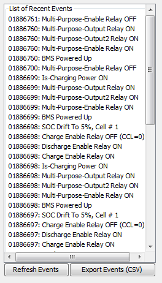

This section lists events and warnings that have occurred recently. These events include:
Relays turning on and off
State of charge drift conditions being met
Fault codes being set
BMS powering up
Power input status changes
Change to cell balancing status
NOTE: The "Refresh Events' button must be pressed before the utility will request the current event list from the BMS.
Every event is stored with a timestamp that is relative to the global runtime counter (that is, the counter that tracks the total number of seconds the BMS has been in service). This runtime counter cannot be cleared or reset and serves as a permanently unique identifier for each event.
Up to 50 events are stored in memory in a round-robin style table (meaning that old events are written over once more than 50 events are stored).
Events are stored in non-volatile long term memory and persist over power loss or restarting / unplugging the BMS.
| < Histogram And Events | State of Charge History > |